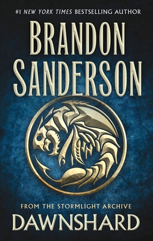

"Dawnshard"
- Read on 2021-04-09
- Rating: ️️️️️
- Format: 📖 (171 pages)
It's interesting to see Brandon Sanderson work on his immensely large epic fantasy series (The Stormlight Archive), in something bite-size like this book. So much of his storytelling in this series takes a long time to build. In the 270 pages of this book, he was able to lean on what he's already built, yet give a totally separate story that somehow feels integral to the rest of the series and beyond. Not only that, but he was able to make me connect to the characters even more while they learn lessons that may or may not have hit close to home.
- Prior: A Man on the Moon
- Next: The Murmur of Bees